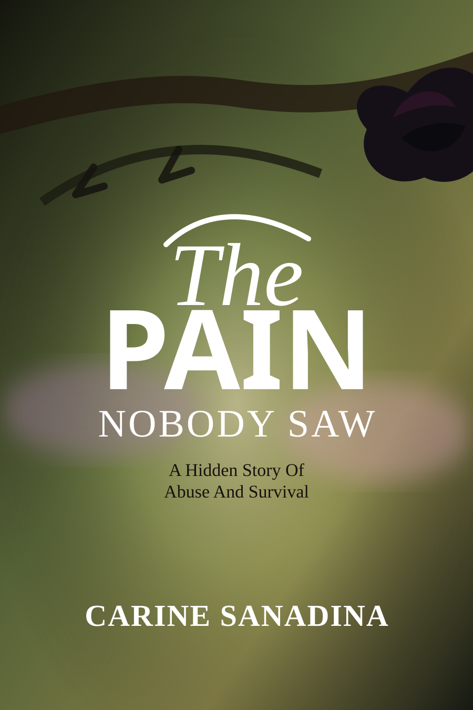

The Pain Nobody Saw: A Hidden Story of Abuse and Survival
A raw memoir exposing the hidden reality of domestic abuse, cultural pressure, silent suffering, and the courageous path toward freedom, faith, and reclaimed self-worth.
Buy on Amazon